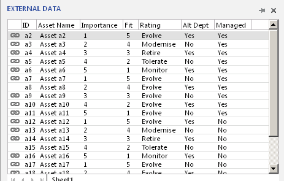
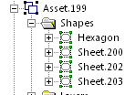
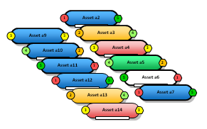
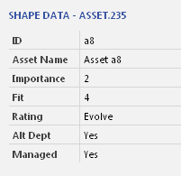
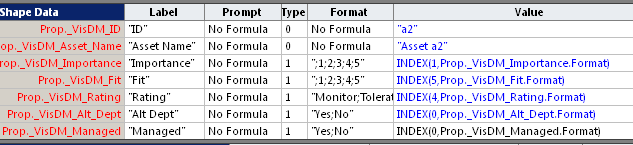
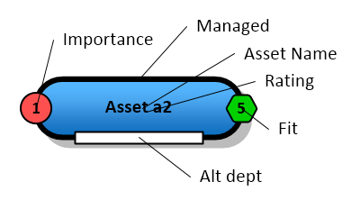
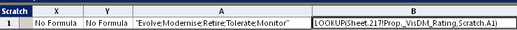
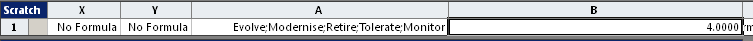
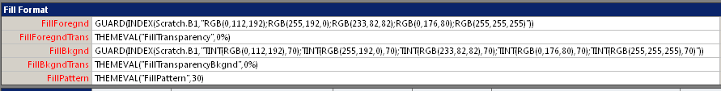
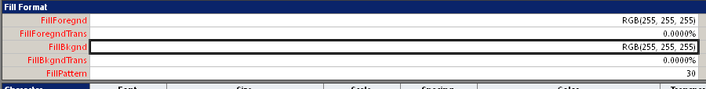

Еще один пример смарт-шейпа в виде иконки. На этот раз конфигурация шейпа мало изменяется, в основном данные превращаются в изменения цвета или толщины линии.
Таблица данных

Структура шейпа

Вид шейпа

Одна колонка отображается цветом основного шейпа. 5 градаций с одинаковым градиентом, но изменяемыми цветами.
Еще две колонки отображаются дополнительными иконками слева и справа. Тоже 5 градаций. Изменяется цвет и цифровое значение. Иконки могут отключаться в зависимости от значений еще двух дополнительных колонок данных.
Еще одна колонка отображается в виде прямоугольника внизу шейпа.
Шейп используется аналогично Data Graphics для отображения внешних данных в виде иконок. Данные поступают из таблицы Excel.
Набор Shape Data

И их представление в шейп-листе

Размещение индикаторов

Данные в основном представлены наборами из 5 градаций, но способы их преобразования в цвет разные. Более сложный для строковых данных.
Так колонка Rating преобразуется в два шага. Сначала строковое значение заменяется на числовое с помощью функции LOOKUP в специальной строке секции Scratch.
Формулы

Значения

Потом по этому индексу выбирается формула цвета из списка с RGB формулами. Причем с учетом градиента приходится задавать два цвета. Так если FillForegnd=RGB(0,112,192), то FillBkgnd=TINT(RGB(0,112,192),70).
Формулы

Значения

А для числовых данных оказалось возможным преобразование в один шаг
FillForegnd=GUARD(IF(ISERROR(INDEX(Sheet.217!Prop._VisDM_Importance,"RGB(255,255,255);RGB(255,80,80);RGB(255,192,0);RGB(255,255,0);RGB(153,255,102);RGB(0,208,0)")),"RGB(255,255,255)",INDEX(Sheet.217!Prop._VisDM_Importance,"RGB(255,255,255);RGB(255,80,80);RGB(255,192,0);RGB(255,255,0);RGB(153,255,102);RGB(0,208,0)")))
Однако на случай, если внешние данные выйдут за ожидаемый диапазон, при таком преобразовании ставится защита. Укрупненная структура формулы следующая
=GUARD(IF(ISERROR(INDEX(...),"RGB(255,255,255)",INDEX(...) ))
То есть при срабатывании функции ISERROR(INDEX(...)) вместо функции INDEX будет подставлена константа.
Шейп принимает данные после связи со строкой внешнего источника данных, которая может выполняться, например, набрасыванием строки данных на шейп. Это не мешает ручному выбору значений из списков в окне Shape Data.
Для подробного рассмотрения или использования в качестве прототипа можно скачать шейп (в трафарете).